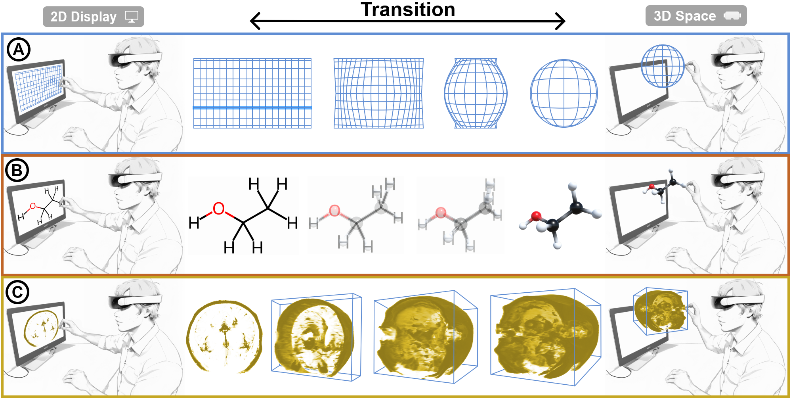

A Design Space for Visualization Transitions of 3D Spatial Data in Hybrid AR-Desktop Environments

Venue. arXiv (2025)
Abstract. We present a design space for animated transitions of the appearance of 3D spatial datasets in a hybrid Augmented Reality (AR)-desktop context. Such hybrid interfaces combine both traditional and immersive displays to facilitate the exploration of 2D and 3D data representations in the environment in which they are best displayed. One key aspect is to introduce transitional animations that change between the different dimensionalities to illustrate the connection between the different representations and to reduce the potential cognitive load on the user. The specific transitions to be used depend on the type of data, the needs of the application domain, and other factors. We summarize these as a transition design space to simplify the decision-making process and provide inspiration for future designs. First, we discuss 3D visualizations from a spatial perspective: a spatial encoding pipeline, where 3D data sampled from the physical world goes through various transformations, being mapped to visual representations, and then being integrated into a hybrid AR-desktop environment. The transition design then focuses on interpolating between two spatial encoding pipelines to provide a smooth experience. To illustrate the use of our design space, we apply it to three case studies that focus on applications in astronomy, radiology, and chemistry; we then discuss lessons learned from these applications.
Acknowledgements. We thank Ambre Assor for her feedback on our manuscipt. This work is partially funded by Deutsche Forschungsgemeinschaft (DFG, German Research Foundation) under Germany’s Excellence Strategy—EXC 2075–390740016. We also acknowledge the support by the Stuttgart Center for Simulation Science (SimTech).
Link to this page: